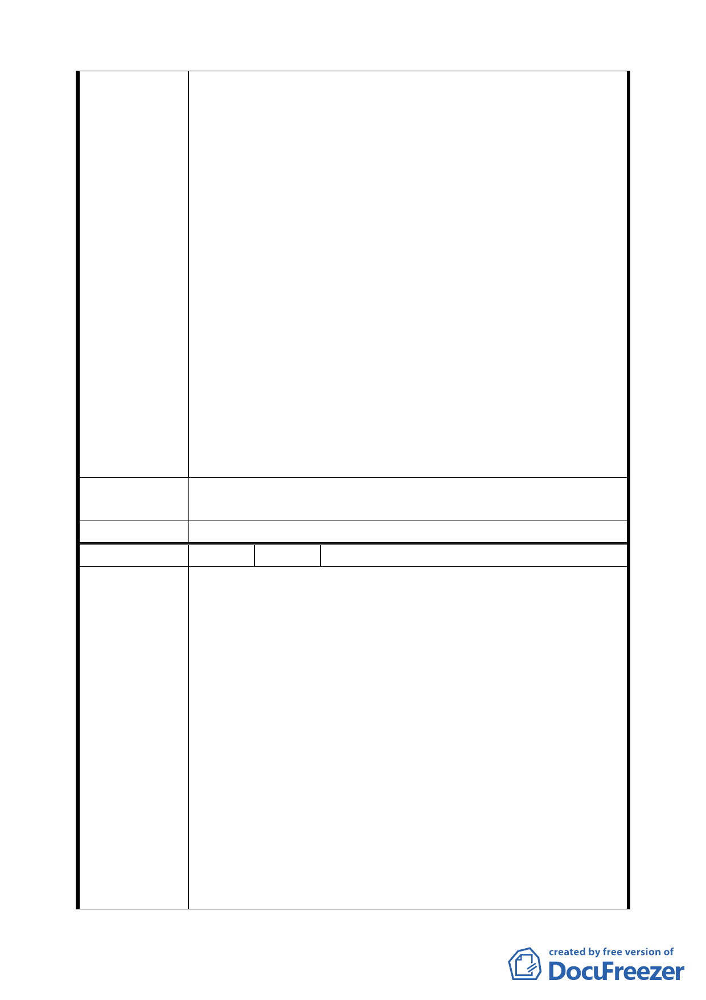

貴的國家及經濟資源，無助於社區繁榮，又損害申請
人之權益，因此請求將本件 4 筆土地不列入上開都計
案聯合開發區。
（五）按土地聯合開發之目的，既在創造捷運工程局、土地
所有人及投資開發人利益共享，達到三贏之局面，自
應尊重土地所有人是否參與之意願。申請人所有之本
件 4 筆土地及本棟商業大樓，均屬依現有都市計畫
法、建築法等法律合法建造取得之私有財產權。憲法
第 15 條明文規定，人民之生存權、工作權及財產權
應予保障。又行政行為如有多種同樣能達成的方法
時，應選擇對人民權益損害最少者，行政程序法第 7
條第 2 款亦定有明文。因此，本件行政權力之行使，
因強制使人民之財產權、工作權發生重大變動，除合
法外，允宜謹慎自制，以免激發民怨、引起抗爭。
三、本件 4 筆土地不列入上開都計案參與聯合開發，亦不影
響新莊線捷運大橋國小站之施作及開發，但對申請人之
工作權及財產權卻有重大影響，且可避免國家社會寶貴
資源之浪費，因此請求將本件 4 筆土地不列入上開都計
案聯合開發區，而仍維持原用途。
建
議
辦
法
請求將本件 4 筆土地不列入上開都計案聯合開發區，而仍維
持原用途。
委 員 會 決 議 同編號 1。
編 號 9 陳情人 磊誠國際法律事務所
一、本件係依張善評、朱枰榕、林清吉、彭舒凡、李聰明、
劉俞婷、蔡松峰、沈素霞及游苓文等委任辦理。
二、茲據前開當事人委稱:「緣本人等為臺北市橋北段 3 小
段 588、589、589-l 及 590 等地號土地之所有權人，
該基地上並有台北市延平北路 3 段 4 號之七層建築物乙
棟 , 而本人等所有之上開基地及建物持分比例業已超
過二分之一，嗣台北市政府捷運工程局擬於上開基地及
陳情理由
附近區域辦理『台北市捷運系統新莊線大橋國小站聯合
開發區』，而多次召開說明會及提供意願調查表，經本
人等仔細計算及長達二年多之時間考慮後，本人等已先
後多次表達『不同意辦理聯合開發』之意見，甚至，主
動陳情請求將本人等所有之上開基地排除於上開聯合
開發範圍內，並幸經相關單位核准而將本人等所有之上
開建物、基地 列為『不參加聯開』部分，然台北市政
府捷運工程局竟礽再於 95 年 6 月 7 日向本人等發函要
求調查本人等之開發意願，甚至，這數日間又各別多次
九